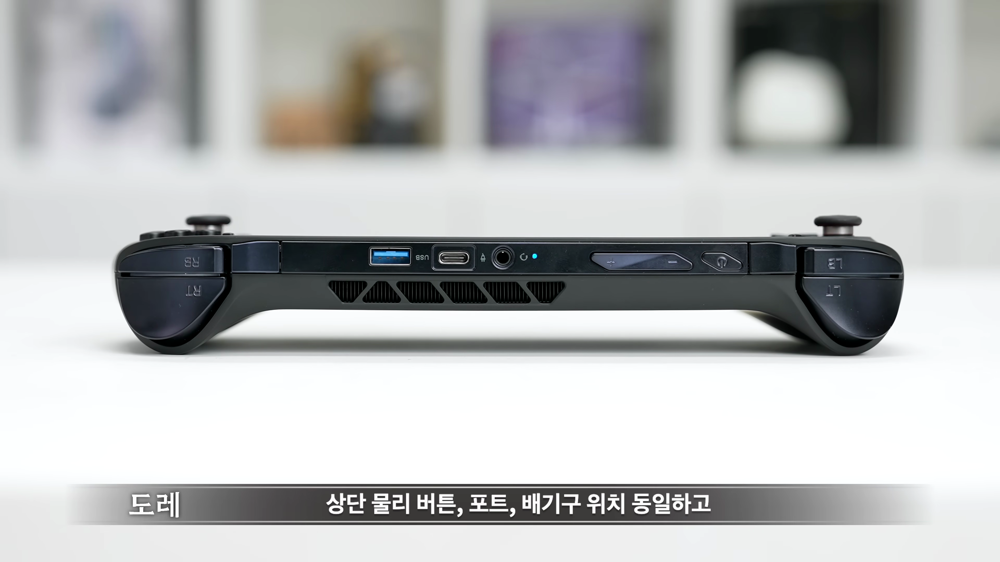

이번 포스트에서는 최신 모바일 PC인 원엑스플라이 F1 프로에 대해 철저히 분석해보았습니다. 프로세서 성능부터 디자인, 게임 성능까지 모든 것을 다루어보니 과연 이 제품이 시장에서 어떤 위치를 차지할지 기대가 됩니다. 핵심 포인트를 타임스탬프와 함께 정리했으니, 자세히 살펴보세요!

제품 소개
- 유 PC 및 미니 PC 소개
- 성능 최고 기준을 자랑하는 제품
이번 포스트에서는 끝판왕 기기인 원엑스플라이 F1 프로를 소개합니다. 성능이 매우 뛰어난 제품입니다.
프로세서 성능
- AMD 라이젠 AI 9 HX 370 프로세서 탑재
- 현재 최고의 모바일 프로세서 중 하나
원엑스플라이 F1 프로는 AMD 라이젠 AI 9 HX 370 프로세서를 탑재하여 뛰어난 성능을 자랑합니다.

디자인 및 외관
- 기존 F1 모델과 일치하는 디자인
- 내구성이 높고 깔끔한 외관
디자인은 기존 F1 모델과 유사하며, 깔끔한 외관으로 호평을 받고 있습니다.

그립감과 크기
- 작고 가벼운 크기
- 손잡이 그립감이 다소 아쉬움
제품의 크기와 무게가 작아 휴대가 용이하지만, 대형 손을 가진 사용자에게는 그립감이 아쉬울 수 있습니다.

게임 성능
- 15W 및 30W 환경에서 테스트 진행
- 디아블로 4 및 포르자 호라이즌 5에서 원활한 플레이
테스트 결과, 디아블로 4와 포르자 호라이즌 5에서 매끄러운 게임 플레이가 가능했으며, 성능 또한 우수하게 나왔습니다.
스피커 및 오디오 성능
- 우수한 스피커 성능
- 게임 및 음악 감상 시 원활한 사운드
스피커는 음악을 감상할 때 풍부한 사운드를 제공하며, 게임 시에도 타격감을 잘 느낄 수 있도록 설계되었습니다.

가격 및 아쉬운 점
- 가격이 비싸며 진입장벽 높음
- 배터리 용량 및 화면 크기에 대한 아쉬움
원엑스플라이 F1 프로는 가격이 비싸고 배터리 용량이 좀 더 늘어나면 좋겠다는 의견이 있습니다.
Tags: #원엑스플라이 #F1 프로 #모바일 PC #AMD 라이젠 #게임 성능 #디자인 #고성능 PC #오디오 성능 #가격 #리뷰